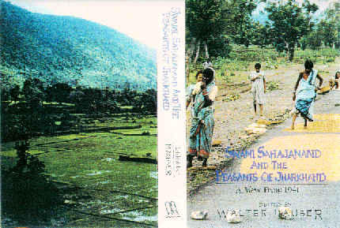

AUTHOR: Sahajananda Sarasvati, Swami, 1889-1950. | Ed. Hauser, Walter, 1927-
TITLE: Swami Sahajanand and the peasants of Jharkhand : a view from 1941
/ an edited translation of Jharkhand ke kisan with the original Hindi
text and an introduction, endnotes, and glossary by Walter Hauser.
OTHER TITLE: Jharakhana ke kisana. English & Hindi
PUBLISHED: New Delhi : Manohar Publishers & Distributors, 1995.
DESCRIPTION: xxiii, 369 p. : map ; 23 cm. Includes index.
SUBJECT TERMS Sahajananda Sarasvati, Swami, 1889-1950. |
Peasantry--India--Bihar--History. |
Jharkhand (India)--Social conditions.
ISBN: 8173041083
CALL NUMBER: DS 485 .J48 S2413 1995
Return to Hauser "Peasant Surprise"
May 1996
OR to Sahajanand page OR to the
Peasant
Symposium May 1997 OR
Swami and Friends by Arvind N. Das